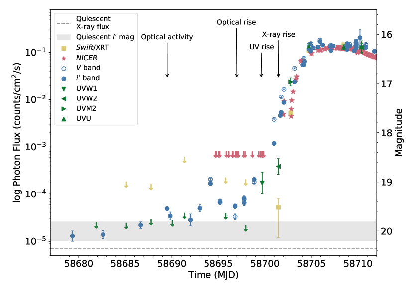
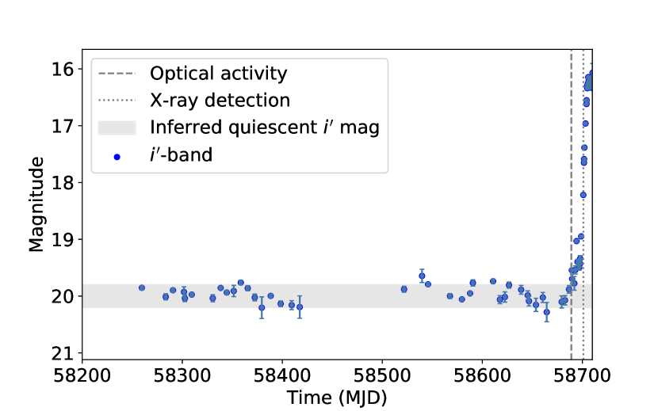
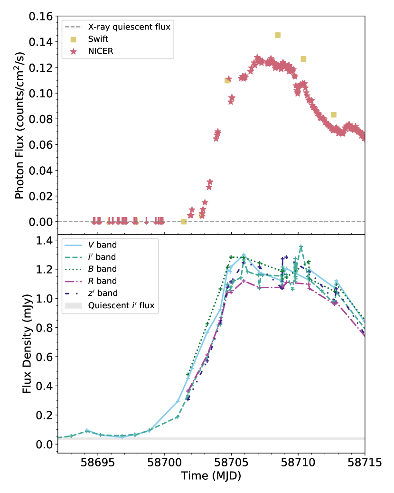
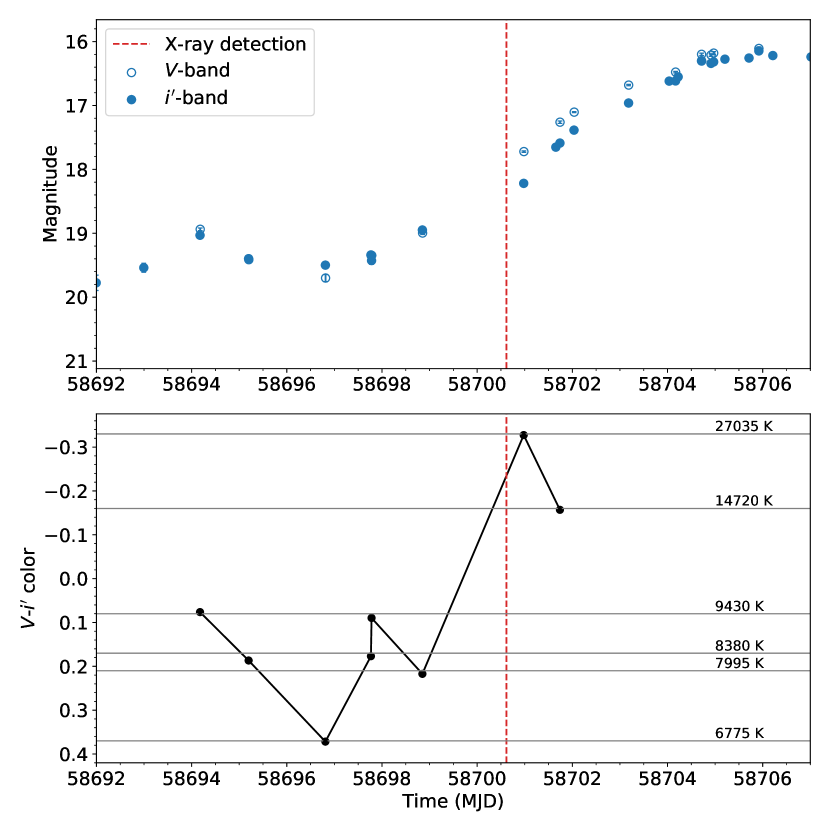
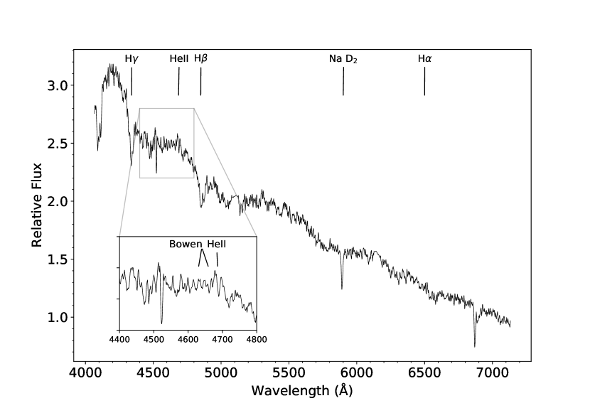

نشاط بصري معزز قبل نشاط الأشعة السينية بـ12 يومًا، وتأخر في الأشعة السينية مقداره 4 يوم أثناء ارتفاع الثوران، في ثنائي أشعة سينية منخفض الكتلة
الملخص
تتعرض العوابِر السينية، مثل النجوم النيوترونية المتراكمة، لثورانات دورية يُعتقد أنها ناجمة عن لااستقرار حراري لزج في قرص التراكم. وعادةً ما تُعرَف ثورانات النجوم النيوترونية المتراكمة عندما يكون قرص التراكم قد دخل بالفعل في حالة لااستقرار، ويرتفع فيض الأشعة السينية المستمر إلى عتبة قابلة للكشف بواسطة مراصد السماء كلها على المراصد الفضائية السينية. نعرض هنا أبكر أرصاد رصدية مشتركة معروفة في النطاقات البصرية وفوق البنفسجية والسينية لبداية ثوران نظام ثنائي أشعة سينية منخفض الكتلة يحوي نجمًا نيوترونيًا متراكمًا. رصدنا ازديادًا مهمًا ومستمرًا في القدر البصري في حزمة ابتداءً من 25 يوليو، أي قبل أول كشف بالأشعة السينية بـ12 يومًا، بواسطة Swift/XRT وNICER في 6 أغسطس، وذلك أثناء بداية ثوران 2019 في SAX J1808.4–3658. كما رصدنا تأخرًا مقداره 4 يومًا في الارتفاع من البصري إلى الأشعة السينية، وتأخرًا مقداره 2 يومًا من فوق البنفسجي إلى الأشعة السينية عند بداية الثوران. ونعرض الأرصاد متعددة الأطوال الموجية التي حصلنا عليها، مع مناقشة نظرية الثورانات في العوابِر السينية، بما في ذلك نموذج لااستقرار القرص، وتبعات التأخر. يمثّل هذا العمل تأكيدًا مهمًا للتأخر بين الانبعاث البصري وانبعاث الأشعة السينية أثناء بداية الثورانات في ثنائيات الأشعة السينية منخفضة الكتلة، وهو تأخر لم يكن قد قيس سابقًا إلا بمراصد السماء كلها الأقل حساسية. ونجد دليلًا رصديًا على أن الثوران ينطلق بفعل تأين الهيدروجين في القرص.
keywords:
التراكم، أقراص التراكم – الأشعة السينية: ثنائيات – الأشعة السينية: مصدر فردي: SAX J1808.4-36581 المقدمة
توجد النجوم النيوترونية المتراكمة العابرة في ثنائيات الأشعة السينية منخفضة الكتلة (LMXBs) في مدارات ثنائية متقاربة مع نجم من النسق الرئيس أو قزم أبيض أو نجم آخر منخفض الكتلة. يتراكم النجم النيوتروني من المرافق عبر فيضان حَدّ Roche، فيتكون قرص تراكم، وينبعث إشعاع نشط على هيئة أشعة سينية عندما تنتقل المادة من قرص التراكم إلى النجم النيوتروني (مثلًا White & Mason, 1985; Lewin & van der Klis, 2006). وتتميّز الثورانات في النجوم النيوترونية المتراكمة العابرة بزيادة مفاجئة في لمعان الأشعة السينية بعدة مراتب مقدار خلال بضعة أيام، يعقبها عادةً خفوت على مقياس زمني يبلغ شهرًا أو عدة أشهر، قبل أن يعود النظام إلى حالته الساكنة منخفضة اللمعان (مثلًا Frank et al., 1987).
يُعتقد عمومًا أن الانبعاث البصري في هذه الأنظمة ينشأ من قرص التراكم الخارجي والنجم المرافق، ومن إعادة معالجة الأشعة السينية في القرص عند اللمعانات الأعلى، مع مساهمة من انبعاث السنكروترون من النفاثات في بعض الحالات (مثلًا Russell, Fender & Jonker, 2007). أما الأشعة السينية فيُعتقد أنها تنشأ قرب النجم النيوتروني، عند القرص الداخلي من جريان التراكم الحار (Lasota, 2001)، أو من سطح النجم النيوتروني. ومن ثم يمكننا استخدام الأرصاد متعددة الأطوال الموجية لثنائيات الأشعة السينية منخفضة الكتلة لتتبع تقدم الثوران، وفصل نشاط قرص التراكم والنفاثة والنجم المرافق والنجم النيوتروني.
كان SAX J1808.4–3658 أول نابض مليثاني مدعوم بالتراكم (AMSP) يُكتشف (in ’t Zand et al., 1998; Wijnands & van der Klis, 1998)، ويدخل في ثوران كل بضع سنوات (Bult et al., 2019; Del Santo et al., 2015; in’t Zand et al., 2013; Markwardt et al., 2011a; Markwardt & Swank, 2008; Markwardt et al., 2002; Wijnands et al., 2001). وقد ظلت ثورانات SAX J1808.4–3658 تحدث بأزمنة تكرار تزداد تدريجيًا (مثلًا Galloway & Cumming, 2006)، وهي ظاهرة محيّرة. يتكوّن النظام من نابض بتردد 401 Hz (Wijnands & van der Klis, 1998) في مدار ثنائي متقارب (P=2.01 hr; Chakrabarty & Morgan, 1998)، مع نجم مرافق منخفض الكتلة جدًا ( M⊙; Deloye et al., 2008; Elebert et al., 2009; Wang et al., 2013) يرجح أنه مستنفد الهيدروجين (Goodwin et al., 2019a; Johnston et al., 2018; Galloway & Cumming, 2006). وأثناء الثوران، يُظهر النظام انفجارات نووية حرارية من النوع I في الأشعة السينية (مثلًا Galloway & Cumming, 2006) مع تذبذبات انفجار عند تردد النابض (in’t Zand et al., 2001; Chakrabarty et al., 2003).
إن الآلية الدقيقة التي تتسبب في بداية ثوران في ثنائيات الأشعة السينية منخفضة الكتلة غير معروفة. ويُعد نموذج لااستقرار القرص (DIM) النظرية السائدة التي تصف آلية للثوران، وهي لااستقرار حراري لزج في القرص (انظر Dubus et al., 2001, للمراجعة). طُرحت النظرية أولًا في سبعينيات القرن 1970 لتفسير ثورانات مشابهة رُصدت في أنظمة المستعرات القزمة (وهي مجموعة فرعية من المتغيرات الكارثية (CVs)؛ Smak, 1971; Hōshi, 1979; Osaki, 1974). ووسّع نموذج DIM ليشمل ثنائيات الأشعة السينية منخفضة الكتلة بعد نحو 20 سنة، عندما أدرك التشابه في سلوك الارتفاع السريع والاضمحلال الأسي بين الثورانات في CVs وثنائيات الأشعة السينية منخفضة الكتلة العابرة (van Paradijs & Verbunt, 1984; Cannizzo et al., 1985; van Paradijs, 1996). وقد أُدخلت بعض التعديلات المهمة والجوهرية على نموذج DIM اللازمة لتفسير التباينات في ثنائيات الأشعة السينية منخفضة الكتلة وسلوكها الرصدي العام. وتشمل هذه التعديلات آثار تشعيع قرص التراكم والنجم المانح بواسطة الجرم الرئيس في ثنائي الأشعة السينية منخفض الكتلة؛ واقتطاع القرص الداخلي إذا كان الجرم المدمج يملك مجالًا مغناطيسيًا قويًا ( G) أو بسبب التبخر؛ وتغيرات معدل انتقال الكتلة؛ ووجود الرياح والتدفقات الخارجة والعزم الذي تمارسه على قرص التراكم (مثلًا، Hameury, 2019). ومع ذلك، بقيت الآلية الأساسية الوحيدة التي تصف سبب الثوران في قرص التراكم ثابتة منذ اقتُرحت النظرية أول مرة؛ أي لااستقرار حراري لزج في القرص.
وفقًا لنموذج DIM، قد تسير دورة الثوران والسكون في ثنائي أشعة سينية منخفض الكتلة على النحو الآتي: أولًا، أثناء السكون، يراكم القرص البارد الكتلة عبر فيضان حَدّ Roche من المرافق حتى يصل القرص إلى كثافة حرجة، وترتفع درجة حرارة القرص إلى القيمة الحرجة المطلوبة لتأيين الهيدروجين. ويتسبب هذا الحدث في انتشار جبهة تسخين عبر القرص، فتجعله في حالة حارة وساطعة، وتبدأ الثوران (e.g. Menou et al., 1999). يدوم الثوران في حدود شهر، وخلاله يؤدي التراكم على الجرم المدمج إلى انبعاث أشعة سينية عالية الطاقة. ثم يخفت لمعان الثوران مع استنزاف القرص، ويعود النظام إلى السكون ليبدأ تراكم الكتلة في القرص استعدادًا للثوران التالي (مثلًا Lasota, 2001). هذه الصورة تمثيل مبسّط جدًا لما يحدث أثناء ثوران ثنائي أشعة سينية منخفض الكتلة، وتُرصد تباينات في سلوك كثير من الأنظمة. ومن هذه التباينات الرئيسة التأخر الزمني بين لحظة حدوث لااستقرار القرص أولًا وبداية انتشار جبهة التسخين في القرص، وبين لحظة بدء الثوران ورصد التراكم على الجرم المدمج بوصفه زيادة في لمعان الأشعة السينية.
يصف Dubus et al. (2001) نوعين مختلفين من الثورانات بحسب المدة التي تستغرقها جبهة التسخين للانتشار إلى القرص الداخلي. تتشكل جبهتا تسخين عند نقطة الاشتعال في القرص، وتنتشران إلى الداخل وإلى الخارج من نصف قطر الاشتعال (Menou et al., 1999). ففي ثورانات “من الداخل إلى الخارج" يحدث الاشتعال عند نصف قطر صغير، وتصل الجبهة المنتشرة نحو الداخل إلى القرص الداخلي أسرع بكثير من وصول الجبهة المنتشرة نحو الخارج إلى القرص الخارجي. أما في ثورانات “من الخارج إلى الداخل" فيحدث الاشتعال عند نصف قطر قرصي أكبر، وقد يستغرق وصول جبهة التسخين إلى القرص الداخلي زمنًا أطول بكثير. يصف Dubus et al. (2001) الفرق الرئيس بين ثورانات “من الداخل إلى الخارج" و“من الخارج إلى الداخل". فأثناء السكون، يكون مقطع الكثافة في القرص متناسبًا خطيًا تقريبًا مع نصف قطره، ما يعني أن جبهات التسخين “من الخارج إلى الداخل" تتقدم دائمًا عبر مناطق ذات كثافة سطحية متناقصة. أما في ثورانات “من الداخل إلى الخارج"، فيمكن للجبهة المتجهة إلى الخارج أن تصادف مناطق ذات كثافات أعلى، وإذا لم تستطع جبهة التسخين رفع كثافة الجبهة فوق الكثافة الأعلى فإنها تتوقف، ويمكن أن تتطور جبهة تبريد. تنتشر جبهات ثورانات “من الداخل إلى الخارج" ببطء، وقد يستغرق جلب القرص إلى الحالة الحارة زمنًا أطول بكثير مما في ثورانات “من الخارج إلى الداخل". وعند أخذ التشعيع في الحسبان، فإنه لا يغيّر بنية جبهة التسخين، لكنه يغيّر نصف القطر الأقصى الذي يمكن أن ينتشر إليه ثوران “من الداخل إلى الخارج". يعتمد نصف قطر الاشتعال على معدل انتقال الكتلة من الثانوي وحجم القرص. (Smak, 1984; Hameury et al., 1998). وعند معدلات انتقال الكتلة المنخفضة، تنجرف المادة المتراكمة إلى الداخل في القرص البارد، وتتراكم الكثافة السطحية العظمى في القرص الداخلي، فتنتج ثورانات من الداخل إلى الخارج. وإذا كان معدل انتقال الكتلة عاليًا، فقد يصبح زمن تراكم الكتلة عند نصف القطر الخارجي أقصر من زمن الانجراف، ويُطلَق ثوران من الخارج إلى الداخل بفعل الكثافة السطحية الأعلى في القرص الخارجي. وجد Dubus et al. (2001) أن معدل انتقال الكتلة المطلوب لحدوث ثوران من الخارج إلى الداخل في نموذجهم لعابر سيني لين كان أعلى من معدل التراكم الذي يكون القرص عنده مستقرًا، مما يشير إلى أن ثورانات الداخل إلى الخارج أكثر احتمالًا لهذا النوع من الأنظمة. ومع ذلك، فإن ثورانًا من الخارج إلى الداخل ممكن نظريًا إذا كان قرص التراكم صغير نصف القطر.
إن أرصاد الارتفاع نحو الثوران في أنظمة ثنائيات الأشعة السينية منخفضة الكتلة، ولا سيما عبر أطوال موجية متعددة، نادرة، لأن الارتفاع يحدث بسرعة نسبيًا (في حدود بضعة أيام)، ولأن الثورانات لا تُكتشف عادةً حتى يرتفع الفيض فوق عتبة الكشف لمراصد السماء كلها على متن المراصد الفضائية السينية. وقد طُوّر نظام الإنذار المبكر الجديد لثنائيات الأشعة السينية (XB-NEWS; Russell et al., 2019a) بهدف إنتاج منحنيات ضوئية آنيًا للرصد البصري طويل الأمد لثنائيات الأشعة السينية منخفضة الكتلة (Lewis et al., 2008, ومصادر أخرى) باستخدام تلسكوبات شبكة Las Cumbres Observatory. ومن الأهداف الرئيسة لهذا المسار التحليلي القدرة على تحديد الثورانات الجديدة في ثنائيات الأشعة السينية منخفضة الكتلة من ارتفاع بصري مبكر، وبصورة آنية، مما سيزيد عدد المصادر ذات التأخرات المقيدة رصديًا بين البصري والأشعة السينية. وتوجد بضعة أنظمة قُيّد فيها التأخر من البصري إلى الأشعة السينية باستخدام أرصاد مراصد السماء كلها السينية. وتشمل هذه: تأخرًا مقداره d في V404 Cyg (Bernardini et al., 2016)، وتأخرًا مقداره d في GRO J1655–40 (Orosz et al., 1997; Hameury et al., 1997)، وتأخرًا مقداره d في XTE J1550–564 (Jain et al., 2001)، وتأخرًا مقداره d في XTE J1118+480 (Wren et al., 2001; Zurita et al., 2006)، وتأخرًا مقداره d في 4U 1543–47، وتأخرًا مقداره d في ASASSN–18ey (Tucker et al., 2018)، وجميعها ثنائيات أشعة سينية منخفضة الكتلة ذات ثقوب سوداء. ويوجد ثنائي أشعة سينية واحد يحوي نجمًا نيوترونيًا، Aql X–1، استُنتج فيه تأخر من البصري إلى الأشعة السينية قدره –8 d (Shahbaz et al., 1998; Russell et al., 2019a)، لكن هذا القيد أيضًا لم يُحصل عليه إلا بمراقب سيني للسماء كلها. وقبل هذا العمل، وحتى الآن، لا توجد أرصاد للارتفاع نحو الثوران في ثنائي أشعة سينية منخفض الكتلة تقيد زمن التأخر على نحو حاسم باستخدام تلسكوب سيني أكثر حساسية من مراقب للسماء كلها.
في هذا العمل نعرض أبكر أرصاد متعددة الأطوال الموجية للارتفاع نحو الثوران للنجم النيوتروني المتراكم SAX J1808.4–3658. في القسم 2، نعرض بإيجاز الأرصاد ومعالجة البيانات لثوران 2019 التي حصلنا عليها. وفي القسم 3 نعرض المنحنى الضوئي متعدد الأطوال الموجية، بما في ذلك طيف بصري حُصل عليه في يوم أول كشف بالأشعة السينية، وتطور درجة حرارة القرص المستنتج من اللون البصري -. وفي القسم 4، نناقش تبعات تأخر مقداره 12 يومًا بين أول كشوف بصرية وسينية للمصدر، ونربط هذه الأرصاد بالتوقعات النظرية من نموذج لااستقرار القرص.
2 الطرائق والأرصاد
راقبنا النابض المليثاني المدعوم بالتراكم SAX J1808.4–3658 أثناء الفترة السابقة لثورانه في 2019 باستخدام مرصد Neil Gehrels Swift (Swift)، وتلسكوب Faulkes الجنوبي بقطر 2-م (في Siding Spring، أستراليا)، وشبكة Las Cumbres Observatory (LCO) من التلسكوبات الروبوتية بقطر 1-م، والتلسكوب الجنوب أفريقي الكبير (SALT).
كان برنامج الرصد لدينا مدفوعًا بتنبؤ نموذج ظاهري (تربيعي) لأزمنة الثورانات السابقة البالغ عددها 8 منذ أول ثوران في 1996. وقد تنبأ النموذج بالثوران التالي في مايو 2019، لكن لم يُرصد أي نشاط في ذلك الشهر ولا في الشهر الذي تلاه. بدأنا برنامجنا الرصدي في 2019 يوليو 17، ورصدنا زيادة ذات دلالة إحصائية (-) عن مستوى السكون في القدر البصري في حزمة في 25 يوليو (MJD 58689). وقد كشفنا أولًا نشاطًا سينيًا بواسطة تلسكوب الأشعة السينية (XRT) على متن Swift في 6.44 أغسطس (MJD 58701.44; Goodwin et al., 2019b)، بعد 12 يومًا من أول علامة على ازدياد النشاط البصري. ثم ازداد فيض الأشعة السينية خلال الأيام 2 التالية، مشيرًا إلى بداية التراكم على النجم النيوتروني وبداية الثوران.
حدث ثوران 2019 متأخرًا بمقدار 85 d عن الزمن الذي تنبأ به النموذج الظاهري، بعد فاصل سكون مقداره 4.3 yr. وهذا الفاصل هو الأطول بين أي ثورانين لـSAX J1808.43658، بفارق يقارب سنة. وقد ازداد فاصل الثورانات بعد كل ثوران، من 1.6 yr بين أول اثنين، في سبتمبر 1996 وأبريل 1998. وكما لاحظ Galloway (2008)، أسهم الاتجاه المستمر لازدياد فاصل الثوران في انخفاض معدل التراكم المتوسط على المدى الطويل. وإذا ظل النموذج التربيعي صالحًا للثوران التالي، فإننا نتوقع حدوثه ليس قبل MJD 60260 (2023 نوفمبر 12)، أي بعد 4.3 yr أخرى من ثوران 2019. ومن المرجح أن يكون عدم اليقين في هذا التنبؤ مماثلًا للحالة الحالية، أي d.
نعرض أدناه وصفًا للأرصاد البصرية، وكذلك أرصاد الأشعة السينية بواسطة Swift وأداة Neutron Star Interior Composition Explorer (NICER)؛ وقد سبق الإبلاغ عن أرصاد NICER في Bult et al. (2019).
2.1 الأرصاد البصرية
2.1.1 رصد LCO
رُصد SAX J1808.4–3658 على نطاق واسع طوال ثوران 2019 منذ بدايته المبكرة باستخدام شبكة Las Cumbres Observatory (LCO)، بما في ذلك تلسكوب Faulkes الجنوبي بقطر 2 متر. تندرج أرصاد LCO ضمن حملة رصد مستمرة لـ50 ثنائيات أشعة سينية منخفضة الكتلة (Lewis et al., 2008) ينسقها مشروع تلسكوب Faulkes. أُجريت الأرصاد بمرشحات Bessell و و ومرشحات SDSS (354–870 nm). ولأغراض هذه الورقة، ندرج قياسات الحزم و و و و للجزء الأول من الثوران. وستُنشر مجموعة البيانات الكاملة في جميع المرشحات في Baglio وآخرين (مقدم) وRussell وآخرين (قيد الإعداد). أُجري القياس الضوئي بفتحة بواسطة مسار جديد لتحليل البيانات هو “X-ray Binary New Early Warning System (XB-NEWS)”، وقد طُوّر بهدف تحليل أي صورة تلقائيًا لقائمة محددة من الأهداف تُلتقط بتلسكوبات شبكة LCO، بما في ذلك الصور الجديدة آنيًا. يحسب المسار أولًا حلًا فلكيًا موضعيًا لكل صورة باستخدام مواضع Gaia DR211 1 https://www.cosmos.esa.int/web/gaia/dr2، ثم يجري قياسًا ضوئيًا دقيقًا بفتحة لجميع النجوم في مجال الرؤية. تُحل معايرات نقطة الصفر بين الحقب باستخدام الطريقة الموضحة في Bramich & Freudling (2012)، وفي النهاية يعاير المسار فيض جميع النجوم على مقياس قدر قياسي باستخدام فهرس ATLAS-REFCAT2 (Tonry et al., 2018)22 2 https://archive.stsci.edu/prepds/atlas-refcat2/ (الذي يشمل PanSTARRS DR1 وAPASS وفهارس أخرى). يجري XB-NEWS أيضًا قياسًا ضوئيًا متعدد الفتحات (مشابهًا لخوارزمية DAOGROW لدى Stetson 1990)، وهو عمليًا قياس ضوئي لتلاؤم ملف PSF متوسط سِمتيًا. وقد حُسّنت هذه الطريقة للمصادر النقطية في الحقول غير المزدحمة جدًا، واستُخدمت لاستخراج أقدار SAX J1808.4–3658 لهذه الورقة.
بالنسبة إلى الصور التي لم يُكشف فيها المصدر رسميًا فوق عتبة الكشف، أُجري قياس ضوئي قسري متعدد الفتحات عند موضع المصدر المعروف، واستُبعدت الأقدار ذات الأخطاء mag لأنها تمثل كشوفًا هامشية جدًا أو عدم كشف. يقع SAX J1808.4–3658 في حقل مزدحم جدًا من مستوى المجرة، مع بضعة نجوم ضمن 1′′ من موضع المصدر (مثلًا Deloye et al., 2008). وقد تسهم هذه النجوم في قياسات فيض السكون، إلا أن ذلك لا يؤثر في تاريخ الارتفاع المبكر نحو الثوران لأن هذه النجوم ثابتة ولا يرتبط الارتفاع بجودة الرؤية.
تتمثل نتيجة عملية المسار في منحنى ضوئي معاير لكل جرم في مجال الرؤية. ولمزيد من التفاصيل انظر Russell et al. (2019a); Pirbhoy et al. (2020). وقد صححنا أيضًا أقدار و من الانطفاء باستخدام mag، حيث استنتجنا بالنظر إلى العلاقة بين و لمجرتنا، كما وردت في Foight et al. (2016)، وباستخدام المقاس لثوران 2019 في SAX J1808.4–3658 والبالغ cm-2 (Di Salvo et al., 2019). وباستخدام قانون الانطفاء لـCardelli et al. (1989)، نستنتج mag.
كان رصد LCO لـ SAX J1808.4–3658 حاسمًا في كشف أول تعزيز للفيض؛ أي السلف المبكر للثوران الجديد، في 25 يوليو (MJD 58689.48؛ Russell et al., 2019b) في حزمة .
2.1.2 مطيافية SALT
أخذنا أرصادًا طيفية بصرية لـ SAX J1808.4–3658 باستخدام التلسكوب الجنوب أفريقي الكبير (SALT; Buckley et al., 2006)، في 2 و3 و6 أغسطس (MJD 58697 و58698 و58701). غطينا المنطقة 4060–7120 Å بدقة وسطية 4.7 Å باستخدام مطياف Robert Stobie (RSS; Burgh et al., 2003) مع محزوز PG900 VPH في نمط نقل الإطار، بتعريضات 200 s وعرض شق 1.5′′. لم يُكشف أي أثر طيفي في 2 أغسطس في تعريض تراكمي 2400 s، رغم وجود مشكلة في التركيز. وكُشف أثر طيفي ضعيف في 3 أغسطس في تعريض تراكمي 2200 s. وفي 6 أغسطس حصلنا على طيف للجرم بتكرارات عددها 12 لتعريضات 200 s، كاشفًا خطوط امتصاص Balmer وامتصاص NaD بين نجمي قوي. وكانت جودة الرؤية في 6 أغسطس 1.8′′. كما حصلنا على أطياف متابعة في 22 و25 أغسطس و26 سبتمبر (MJD 58717 و58720 و58752)، وستُعرض في ورقة متابعة (Russell وآخرون، قيد الإعداد).
أُنجزت اختزالات البيانات الطيفية باستخدام PySALT الإصدار 0.47، وهي حزمة برمجية مبنية على PyRAF لاختزالات بيانات SALT (Crawford et al., 2010)33 3 https://astronomers.salt.ac.za/software/pysalt-documentation/، وتشمل تصحيحات الكسب والتداخل المتبادل بين المضخمات، وطرح الانحياز، وتجميع فسيفساء المضخمات، والتصحيحات التجميلية. وأُجريت جميع الاختزالات الطيفية (استخراج الجرم، ومعايرة الطول الموجي، وطرح الخلفية) باستخدام روتينات IRAF44 4 https://iraf.noao.edu/ القياسية، وكذلك معايرة الفيض النسبية، إذ إن معايرة الفيض المطلقة غير ممكنة مع SALT بسبب تصميمه غير المعتاد (Buckley et al., 2017). أما النتوءات منخفضة التردد فهي آثار اصطناعية ناجمة عن معايرة الفيض غير المثالية.
2.2 أرصاد Swift
2.2.1 XRT
يتحسس XRT على متن Swift في نطاق الطاقة 0.2–10 keV، وله مساحة فعالة 100 cm2، ومجال رؤية 23.623.6′، ودقة 18′′ عند قطر نصف القدرة (Burrows et al., 2005). حصلنا على مجموع 14 رصدًا بين 21 يوليو و9 أغسطس (MJD 58685 إلى 58705)، بمتوسط زمن تعريض 0.5 ks، ووتيرة 2 أيام. نُفذت أرصاد 8 بين 21 يوليو و4 أغسطس باستخدام XRT في نمط Windowed Timing (WT)، والرصد في 6 أغسطس باستخدام XRT في نمط Photon Counting (PC)، وبقية الأرصاد من 8 أغسطس باستخدام XRT في نمط Auto. يوفر نمط WT تصويرًا ذا 1 أبعاد عند اتجاه زاوية دحرجة المركبة الفضائية، بحد حساسية يقارب 2.4 erg cm-2 s-1. ويسمح نمط عد الفوتونات بالحصول على معلومات طيفية ومكانية كاملة للمصادر، وهو قادر على قياس الفيوض بدقة حتى erg cm-2 s-1 في s. ولاستخراج فيض الأشعة السينية المقاس بواسطة XRT، فحصنا جميع الأرصاد 14 (OBSID 00030034120–00033801025، من 21 يوليو إلى 9 أغسطس) باستخدام منشئ منتجات XRT الإلكتروني الخاص بـSwift (Evans et al., 2009). تعذرت معالجة الأرصاد السابقة لـ 6 أغسطس (OBSID 00030034120–00030034127) باستخدام منشئ منتجات XRT الإلكتروني، لذلك استخرجنا الحدود العليا يدويًا باستخدام صندوق 20 في 5 pixels (مضبوطًا ليتطابق مع البيانات) لاستخراج فيض المصدر، ومنطقة أكبر (عادةً pixels في pixels) لاستخراج الخلفية. ولم يكن المصدر مرئيًا بوضوح للعين في أي من هذه الأرصاد. وُلدت خرائط التعريض ودوال الاستجابة الملحقة، مع ملف RMF الملائم من موقع معايرة Swift. وتمثل الحدود العليا التي حصلنا عليها مستويات ثقة 90 (ثنائية الطرف). واستُبعدت حالتان لم يصب فيهما مجال رؤية Swift الهدف (OBSID 00030034122 و00030034128)، وحالة واحدة كان الرصد فيها بطول 40 s فقط (OBSID 00030034128).
2.2.2 UVOT
إن التلسكوب فوق البنفسجي والبصري (UVOT) على متن Swift عاكس Ritchey-Chrétien بقطر 30 cm، له مجال رؤية 1717′، ويتحسس أطوالًا موجية في النطاق 1700–6500 Å، ويعمل في نمط عد الفوتونات. وله 7 مرشحًا، استُخدم 4 منها في هذا المشروع. تبلغ حساسية مرشح UVW1 ذروتها عند 2600 Å، ومرشح UVW2 عند 1928 Å، ومرشح UVM2 عند 2245 Å، ومرشح U عند 3465 Å (Roming et al., 2005). ولاستخراج فيض فوق البنفسجي لكل مرشح، فحصنا الأرصاد بين 19 يوليو و10 أغسطس (MJD 58683 إلى 58705). أعدنا محاذاة الصور، واستخدمنا منطقة مصدر دائرية مقدارها 5′′ ومنطقة خلفية تتكون من فتحات 35′′ (نظرًا إلى أن الحقل مزدحم جدًا في فوق البنفسجي، لا يمكن العثور على منطقة خلفية أكبر). استخدمنا أدوات برمجيات HEAsoft Swift55 5 https://heasarc.nasa.gov/lheasoft/ ومهمة uvotsource لإجراء القياس الضوئي بالفتحة وبناء المنحنى الضوئي. وتمثل أشرطة الخطأ والحدود العليا 1-. وقد رُفضت حالتان لصور ذات تعريض منخفض جدًا أدت إلى حدود عليا غير مقيدة (OBSID 30034125 مع مرشح UVW2، وهو المرشح الوحيد المستخدم خلال هذا الرصد، و00030034140 مع مرشح UVW1، وهو واحد من ثلاثة مرشحات استخدمت خلال هذا الرصد والمرشحان الآخران هما UVM2 وUVW2). ولتصحيح أقدار فوق البنفسجي من الانطفاء، استخدمنا العلاقة مع الموضحة في Mathis (1990) لاستنتاج أن و و و.
2.3 أرصاد NICER
تتكون أداة توقيت الأشعة السينية في NICER (Gendreau et al., 2016) من 56 مُركّزات، يقترن كل منها بكاشف انجراف سيليكوني موجود في وحدة مستوي بؤري (FPM). وعند وقت أرصاد SAX J1808.4–3658، كان 52 من أصل 56 وحدة FPM يعمل، موفرًا مساحة فعالة مقدارها 1750 cm2 في نطاق 0.2–12 keV. حللنا 69 NICER ObsIDs لـ SAX J1808.4–3658 (2050260101–2584014301)، تقابل أرصادًا أُجريت بين 30 يوليو و13 أكتوبر. وغالبًا ما كان المصدر يُرصد مرات متعددة في اليوم، مما أدى إلى تغطية كثيفة لمرحلة ما قبل الثوران وللارتفاع.
استخدمنا مهمة nicerl2 في HEAsoft الإصدار 6.27.2 لإعادة معالجة جميع الأرصاد، مع تطبيق حل الكسب ‘optmv7he’ واستخدام معايير الترشيح الافتراضية. استخرجنا أطيافًا من جميع وحدات FPM النشطة، باستثناء 14 و34، التي كثيرًا ما تُظهر ضجيجًا زائدًا؛ ولكل فواصل الزمن الجيد (GTIs) الأطول من 100 s. ونظرًا إلى أن NICER أداة غير تصويرية، يلزم تقدير الخلفية. استخدمنا الأداة nibackgen3C50 (R. Remillard وآخرون، قيد الإعداد) التي تنبأت بمعدلات خلفية أدنى عمومًا من 3 counts s-1 في نطاق 0.5–10 keV. جُمعت الأطياف المستخرجة إلى حد أدنى قدره 25 عددًا لكل حاوية. وطُرحت منها الخلفية وحُللت في نطاق 0.5-10 keV باستخدام XSPEC 12.11.0 (Arnaud, 1996)، مع ملفات الاستجابة الملائمة لحل الكسب ‘optmv7he’، وباستخدام إحصائية . كما استُخدمت الأطياف المستخرجة وأطياف الخلفية النموذجية لبناء منحنى ضوئي مطروح الخلفية في نطاق 0.5–10 keV، بنقطة بيانات واحدة لكل GTI (رموز وردية في الشكل 1).
أُجري أول كشف واضح لـ SAX J1808.4–3658 بواسطة NICER أثناء الارتفاع في 6 أغسطس، الساعة 22:00 UTC، عندما كان معدل العد الصافي (مطروح الخلفية) 9.16 counts s-1. لائمنا طيف ذلك GTI بقانون قدرة ممتص (tbnew pegpwrlw في XSPEC)، مع ضبط مقطع التأين الضوئي على vern والوفرة على wilm. وتعطي أفضل ملاءمة لدينا (=88 لـ108 درجة حرية) قيمة مقدارها 0.330.03 atoms cm-2، ودليل فوتوني لقانون القدرة مقداره 2.430.07، وفيضًا غير ممتص في نطاق 0.5–10 keV قدره (2.910.11) erg cm-2 s-1.
أُجري كشف محتمل قبل ذلك بفاصل GTI واحد، في 5 أغسطس الساعة 22:46 UTC، عندما كان معدل العد الصافي (1.440.06 counts s-1) أعلى مما كان عليه خلال جميع الأرصاد السابقة (بحد أقصى 0.85 counts s-1). غير أن المقارنة بقياسات الخلفية المتزامنة أشارت إلى أن الفيض كان لا يزال تهيمن عليه الخلفية، ولم يكن هناك كشف ذو دلالة إحصائية.
بين 30 يوليو و5 أغسطس، تراوحت معدلات العد الصافية بين -0.22 و1.44 counts s-1، بمتوسط counts s-1. وهذا المعدل أعلى من الصفر بوضوح، وربما يعود إلى مصادر ملوثة داخل مجال رؤية NICER البالغ 30 arcmin2. ومن المرجح أن التباينات في معدل العد الصافي قبل الثوران ناجمة عن حدود نموذج الخلفية (الذي لا يزال يُصقَل). يبلغ الانحراف المعياري 1- في معدل العد الصافي قبل أول كشف 0.32 counts s-1. ونعد متوسط معدل العد الصافي قبل الثوران زائد ثلاثة أمثال الانحراف المعياري 1-، أي 1.37 counts s-1، تقديرًا عامًا جيدًا لحد كشف NICER لـ SAX J1808.4–3658. وباستخدام نموذج أفضل ملاءمة لطيف أول كشف، يقابل معدل العد هذا فيضًا غير ممتص في نطاق 0.5–10 keV قدره erg cm-2 s-1.
3 النتائج
يُعرض المنحنى الضوئي متعدد الأطوال الموجية للارتفاع نحو ثوران 2019 في SAX J1808.4–3658 في الشكل 1. لُوحظ نشاط المصدر أولًا في الأرصاد البصرية لحزمة ، ابتداءً من 25 يوليو (MJD 58689)، إذ تذبذب قدر حزمة بين قيم أسطع بمقدار 0.7–1.0 mag من مستوى السكون البالغ قرابة 19.8 mag. ثم بين 3.85 و5.98 أغسطس (MJD 58698.85 و58700.98)، ازدادت شدة حزمة إلى نحو 2 mag أسطع من مستوى السكون، واستمرت في الازدياد خلال الأيام اللاحقة مع تقدم الثوران. وقد بلغ ثوران 2019 ذروته نحو 10 أغسطس (MJD 58705) في النطاق البصري، و14 أغسطس (MJD 58709) في الأشعة السينية (الشكل 1).
حدث أول كشف بواسطة Swift/UVOT في 4 أغسطس (MJD 58699.71)، بعد 10 يومًا من أول علامة على ازدياد النشاط البصري في المصدر، وقبل أول كشف بالأشعة السينية بـ2 d. وارتفع قدر فوق البنفسجي في جميع الحزم بحدة بنحو 3 mag خلال الأيام 4 التالية حتى بلوغ ذروة الثوران. ونلاحظ أنه قبل 4 أغسطس، كانت هناك 7 أرصاد فوق بنفسجية لم نحصل فيها إلا على حد أعلى بواسطة Swift/UVOT، وكانت حساسيتها mag لأرصادنا نظرًا إلى أزمنة التعريض القصيرة للصور، ولذلك لا يمكننا استبعاد وجود نشاط فوق بنفسجي منخفض المستوى قبل 4 أغسطس.
لم يُكشف المصدر في أرصاد 8 Swift/XRT بين 17 يوليو و1 أغسطس (MJD 58685–58697)، مع حدود عليا مقدارها erg cm-2 s-1(0.2–10 keV). وكان هناك كشف هامشي للمصدر في 2 أغسطس (MJD 58697.85). غير أن بيانات 2 أغسطس من Swift/XRT لا تُظهر مصدرًا واضحًا عند الفحص البصري، مما يدفعنا إلى الاشتباه في كشف زائف. ونلاحظ أن أرصاد Swift/XRT بين 17 يوليو و4 أغسطس أُجريت باستخدام XRT في نمط WT، وهو أقل حساسية من XRT في نمط PC، ولذلك لا يمكننا استبعاد نشاط سيني منخفض المستوى ( erg cm-2 s-1) خلال هذه الفترة.
في 6.44 أغسطس (MJD 58701.44)، كُشف المصدر أولًا بواسطة XRT في نمط PC، بمعدل عد count s-1 في زمن تعريض 614 s. نقدّر فيضًا سينيًا غير ممتص (0.2–10 keV) قدره erg cm-2 s-1، لطيف قانون قدرة بدليل فوتوني 1.73 وعمود هيدروجين متعادل cm-2 (Di Salvo et al., 2019). وفي وقت لاحق من ذلك اليوم، كشف NICER المصدر أولًا في 6.92 أغسطس (MJD 58701.92)، عند معدل عد في نطاق 0.5–10 keV مقداره 9.07 count s-1. ولهذا الرصد وبنفس المعاملات الطيفية، نقدّر فيضًا غير ممتص (0.5–10 keV) قدره erg cm-2 s-1.

يتوافق أول كشف سيني بواسطة Swift في 6 أغسطس مع فيض أكبر بمقدار 50 مرة من فيض الأشعة السينية الساكن لـ SAX J1808.4–3658، البالغ erg cm-2 s-1 (0.5–10 keV، Heinke et al., 2009). وهذا الفيض هو أدنى فيض كُشف عنده المصدر في الجزء المبكر من أي ثوران حتى الآن (كان أدنى فيض سابق كُشف عنده المصدر في وقت مبكر من الثوران في 2011 عند فيض 0.2 mCrab، وهو يساوي 100 مرة من فيض الأشعة السينية الساكن؛ Markwardt et al., 2011b). نقدّر التأخر المرصود المحتمل بين أول نشاط بصري وأول كشف سيني فوق حد حساسية Swift بأنه 10–15 d، استنادًا إلى وتيرة الأرصاد البصرية والسينية. وتشير حقيقة أننا كشفنا المصدر عند هذا الفيض السيني المنخفض إلى أن التأخر البالغ 12 يومًا بين أول نشاط بصري وأول نشاط سيني مكتشف قريب من الزمن الفعلي اللازم لتأين القرص بالكامل ابتداءً من لااستقرار أولي، ولبدء ثوران التراكم.
3.1 السكون البصري وأولى علامات النشاط في 2019
فحصنا أرصاد LCO في حزمة لـ SAX J1808.4–3658 من نحو 500 d قبل ثوران 2019، من أجل تحديد مستوى السكون للنشاط البصري، ودلالة النشاط البصري الذي رأيناه في 25 يوليو (MJD 58689، الشكل 2).

يشير منحنى السكون الضوئي المعروض في الشكل 2 إلى تباينات مهمة في القدر في حزمة على نطاق من المقاييس الزمنية. وبافتراض أن المصدر في حالة سكون خلال هذه الأيام 500، نقيس بذلك مستوى سكون بصريًا في حزمة مقداره 19.8–20.2 mag. وقد قاس Deloye et al. (2008) نطاق قدر سكون في حزمة مصحح من الاحمرار قدره 20.05–20.55 لـ SAX J1808.43658، وهو أخفت من نطاقنا المستنتج. ونشتبه في أن التباين قد يكون بسبب تغيرات مدارية والتباس في أرصاد LCO. وبدلًا من ذلك، قد يكون مستوى السكون البصري للمصدر قد تطور منذ ثوران 2008، وقد يبدو المصدر الآن أسطع قليلًا في السكون. ومع ذلك، لا نرى دليلًا على نشاط بصري أعلى من مستوى السكون المرصود بواسطة LCO قبل 25 يوليو، وهو الوقت الذي نستنتج فيه أن النشاط البصري بدأ.
3.2 التطور الطيفي ودرجة حرارة القرص
تُعرض المنحنيات الضوئية البصرية والسينية الخطية في الشكل 3. ومن الواضح أن حزمة ارتفعت أسرع من حزمة وقبلها، مع أرصاد مبكرة محدودة في الحزم و و. ويبدو أن حزمة ترتفع بأسرع وتيرة، وتصل إلى الذروة قبل الحزم الأخرى. ومن المثير للاهتمام أن حزمة رُصدت أيضًا وهي ترتفع أولًا، ورُصدت حزمة وهي ترتفع بأسرع وتيرة في أرصاد المستعر القزم WX Hydri (Kuulkers et al., 1991). وفي ثوران 1996 لـ GRO J1655–40، رُصدت حزمة وهي ترتفع بعد الحزم و و (Hameury et al., 1997).

حددنا درجة حرارة بصرية في حزمة 2 من اللون - باستخدام أرصاد LCO في حزمتي و، كما هو مبين في الشكل 4. ولاشتقاق درجة حرارة من لون -، نقرب الجزء باعث الضوء البصري من القرص بجسم أسود ذي درجة حرارة متغيرة زمنياً لنمذجة العلاقة بين اللون والقدر. واعتمدنا نموذج Maitra & Bailyn (2008)، الموصوف بالتفصيل في Russell et al. (2011). ويعتمد نموذج الجسم الأسود على اللون الذاتي، ومن ثم على الانطفاء المفترض.
يعتمد مدى ملاءمة نموذج الجسم الأسود للبيانات على اللايقينات في معاملات النظام، وكذلك على هندسة القرص، لذلك لا نلائم النموذج مع البيانات، بل نستخدم معامل تطبيع لجعل النموذج يتداخل تقريبًا مع البيانات. ويتيح لنا هذا النهج تقدير درجة حرارة القرص التقريبية، واستنتاج الاتجاه العام في تغير درجة الحرارة أثناء بداية الثوران.

رصدنا انتقال القرص عبر درجة الحرارة التي يتأين عندها الهيدروجين خلال 12 d من النشاط البصري، قبل رصد الانبعاث السيني. في الشكل 4 يبدأ القرص بدرجة حرارة 10,000 K، بعد 5 أيام من أول علامة على ازدياد النشاط البصري في 25 يوليو، ثم تنخفض درجة الحرارة إلى 7,000 K في 2 أغسطس، ثم يبقى نحو 2 d عند درجة حرارة K، وأخيرًا يرتفع إلى درجة حرارة K، بالتزامن مع أول كشف سيني للمصدر في 6 أغسطس. وبعد 6 أغسطس، يبدأ لون الحزمتين - في الازدياد مرة أخرى، وينهار نموذجنا البسيط لقرص الجسم الأسود لأن الطيف البصري أصبح عندئذ غالبًا يحوي مساهمات من القرص الخارجي المشعَّع وكذلك من مركبة نفاثة (Baglio وآخرون، مقدم). لذلك لا يمكننا بعد 6 أغسطس استنتاج درجة حرارة القرص باستخدام نموذجنا، ومن غير المرجح أن تكون درجة حرارة قرص التراكم قد بدأت بالانخفاض مرة أخرى؛ والأرجح أن مركبة النفاثة في الانبعاث البصري تسهم في لون -، وهي مركبة لا يتضمنها نموذج القرص لدينا.
نلاحظ أنه لا تتوفر لدينا قياسات قدر و متزامنة تمامًا لاستنتاج درجات الحرارة في الشكل 4 من لون -، مما قد يسبب لايقينات أكبر في درجة الحرارة عند الأقدار الأكثر سطوعًا، أو درجات الحرارة الأعلى. أما نقاط القدر الأخفت في وقت مبكر من الارتفاع فهي أقل تأثرًا بهذه اللايقينية، لأن 0.1 mag تقابل K عند هذه الفيوض المنخفضة. أشرطة الخطأ التي نرسمها إحصائية فقط، ولا تأخذ في الحسبان اللايقينات المنهجية في لون -. ويُعرض مخطط اللون-القدر للثوران كله وملاءمة النموذج للبيانات في (Baglio وآخرون، مقدم).
يتوافق نطاق درجات الحرارة الذي استنتجناه من بداية النشاط البصري حتى أول كشف بالأشعة السينية مع نطاق درجات حرارة تأين الهيدروجين، إذ يكون الهيدروجين على الأرجح متعادلًا بالكامل دون 5,000 K، ومتأينًا بالكامل عند 10,000 K (Lasota, Dubus & Kruk, 2008). وهذا الرصد حاسم في تأكيد دور تأين الهيدروجين في نموذج DIM، وفي إطلاق الثورانات في ثنائيات الأشعة السينية منخفضة الكتلة.
3.3 الطيف البصري
يتسق الطيف البصري المجمّع من 2019 أغسطس 6 (MJD 58701)، المعروض في الشكل 5، مع قرص تراكم سميك بصريًا يُرى عند ميل منخفض إلى متوسط. ويشبه الطيف ذلك الذي أخذه Cornelisse et al. (2009) أثناء ثوران 2008، مع خطوط امتصاص قوية لـ H وH وH، لكن بانبعاث HeII ضعيف ودون انبعاث مرئي لمعقد Bowen. وتظهر انقلابات انبعاث مركزية في خطي امتصاص H وH، تكاد تملأ الأول منهما. وقد رُصد خط انبعاث HeII قوي في وقت لاحق من الثوران في أطياف إضافية حُصل عليها باستخدام SALT (Russell وآخرون، قيد الإعداد)، وهو موجود في الطيف الذي حصل عليه Cornelisse et al. (2009) أثناء ثوران 2008، غير أنه لم يُكشف أي انبعاث لمعقد Bowen في أي من الأطياف التي حُصل عليها باستخدام SALT أثناء هذا الثوران.

من المرجح أن يتكون قرص التراكم في SAX J1808.4–3658 من 50 هيليوم، كما استُنتج من خصائص انفجارات الأشعة السينية من النوع I المرصودة من المصدر (Goodwin et al., 2019a; Galloway & Cumming, 2006; Johnston et al., 2018). ويتزامن الطيف المرصود في 6 أغسطس مع درجة حرارة مستنتجة لقرص التراكم مقدارها 10,000 K (القسم 3.2)، وهي تقع تمامًا عند درجة الحرارة التي يبدأ عندها الهيليوم في القرص بالتأين. إن حقيقة أن انبعاث HeII كان ضعيفًا فقط في الطيف، وأن انبعاث HeII أقوى بكثير رُصد لاحقًا في الثوران، تعني أن قرص التراكم لم يكن قد بلغ بعد حرارة كافية في ذلك الوقت لتأيين مقدار كبير من الهيليوم في القرص، وأن مزيدًا من الهيليوم في القرص تأين لاحقًا أثناء الثوران.
4 المناقشة
تكشف نتائجنا تأخرًا مقداره 10–15 d بين النشاط البصري ونشاط الأشعة السينية عند بداية الثوران في النابض المليثاني المدعوم بالتراكم SAX J1808.4–3658، وكذلك تأخرًا في الارتفاع من البصري إلى الأشعة السينية مقداره 4 d. ويعرض هذا العمل أول قياس رصدي لزمن تأخر الأشعة السينية في ثنائي أشعة سينية منخفض الكتلة باستخدام أداة سينية أكثر حساسية من مراقب للسماء كلها، ويوفر قيودًا رصدية مهمة لنموذج لااستقرار القرص. ويؤكد أول كشف سيني لنا عند 50 مرة من مستوى الأشعة السينية الساكن أن النشاط السيني قبل هذا الكشف كان إما غير موجود أو منخفض المستوى جدًا. والتأخر البالغ 12 d (بنطاق محتمل 10–15 d) بين النشاط السيني والبصري الذي رصدناه يدل على الزمن بين البدايات الأولية للنشاط في النظام، وإطلاق الثوران عبر لااستقرار قرصي، وبداية التراكم على النجم النيوتروني.
يُعد SAX J1808.4–3658 مصدرًا مدروسًا جيدًا جدًا، وله قيود مدارية مقيسة بدقة، مذكورة في القسم 1. وتشير هذه القيود الرصدية إلى أن قرص التراكم في SAX J1808.4–3658 صغير ( cm)، وأن القرص الداخلي يرجح أنه مقتطع بفعل المجال المغناطيسي للنجم النيوتروني (Papitto et al., 2009) عند نصف قطر الغلاف المغناطيسي للنجم النيوتروني (انظر مثلًا Frank et al., 2002). وهذه اعتبارات مهمة يجب أخذها في الحسبان عند تقييم إمكانية تفسير الثوران بواسطة نموذج DIM.
لم يكن هناك كشف راديوي متزامن مع موضع SAX J1808.43658 قبل أول كشف بالأشعة السينية في 6 أغسطس، في رصد أجراه MeerKAT في 31 يوليو (Williams et al., 2019a)، لكن كان هناك كشف راديوي بواسطة MeerKAT قرب ذروة الثوران، في 10 أغسطس (Williams et al., 2019b). ونظرًا إلى أن الانبعاث الراديوي يُعتقد عمومًا أنه يأتي من مركبة نفاثة في النظام، فإن عدم الكشف في 31
تتوافق درجة حرارة قرص التراكم التي استنتجناها أثناء الارتفاع البصري، من 7000 K صعودًا إلى K عند زمن أول كشف بالأشعة السينية، تمامًا مع نطاق درجة حرارة تأين الهيدروجين. علاوة على ذلك، في الطيف الذي حُصل عليه في 6 أغسطس (الشكل 5)، تمثل خطوط امتصاص Balmer القوية الموجودة مؤشرًا واضحًا على تأين الهيدروجين في القرص. ومن ثم تدعم درجات الحرارة المستنتجة هذه ومستوى تأين الهيدروجين النظرية السائدة لنموذج لااستقرار القرص: أن اللااستقرار الأولي الذي يطلق الثوران ناجم عن تأين الهيدروجين في قرص التراكم (مثلًا Lasota, 2001; Dubus et al., 2001).
4.1 نموذج لااستقرار القرص
نناقش الآن ما إذا كانت الأرصاد التي نعرضها متسقة مع نظرية DIM، وما إذا كان هناك دليل على ثوران من نوع الخارج إلى الداخل أو الداخل إلى الخارج. كلاسيكيًا، هناك فهم عام بأنه لن يُرصد تأخر سيني في ثوران من نوع الداخل إلى الخارج، بينما سيظهر تأخر سيني في ثوران من نوع الخارج إلى الداخل. إلا أن Menou et al. (1999) وLasota (2001) يتحفظان في التأكيد على أن التأخر السيني المرصود أثناء ارتفاع ثنائي أشعة سينية منخفض الكتلة نحو الثوران ليس دليلًا على ثوران من الخارج إلى الداخل، لأن هذا التأخر ممكن نظريًا في ثوران من نوع الداخل إلى الخارج إذا كان القرص مقتطعًا. في هذا السيناريو، يحدث الاشتعال عند الحافة الداخلية المقتطعة لقرص التراكم، وهي لا تزال بعيدة عن الجرم المدمج، لكنه يُصنف تقنيًا على أنه ثوران من نوع الداخل إلى الخارج. ونظريًا، تُتوقع ثورانات الداخل إلى الخارج في ثنائيات الأشعة السينية منخفضة الكتلة، أساسًا بسبب أزمنة الارتفاع الأبطأ، والأقراص الأكبر، والشكل المرصود للمنحنيات الضوئية للثوران في هذه الأنظمة (Lasota, 2001). ومع ذلك، وبسبب نقص الأرصاد الشاملة متعددة الأطوال الموجية لارتفاع ثنائيات الأشعة السينية منخفضة الكتلة نحو الثوران، لا يوجد دليل مقنع على أنها تُظهر ثورانات من الخارج إلى الداخل أو من الداخل إلى الخارج.
إن أهم المعاملات المحددة لموضع الكثافة السطحية العظمى في قرص التراكم، ومن ثم نوع الثوران الذي سيحدث في ثنائي أشعة سينية منخفض الكتلة، هي معدل انتقال الكتلة إلى القرص، وحجم قرص التراكم، وما إذا كان القرص مقتطعًا. ووفقًا لـ Lasota (2001)، يُعطى معيار معدل انتقال الكتلة لحدوث ثورانات الخارج إلى الداخل بـ،
| (1) |
حيث عادةً .
لذلك، بالنسبة إلى SAX J1808.4–3658، حيث استُنتج أن معدل التراكم الساكن هو g s-1 (Heinke et al., 2009)، يبلغ معدل انتقال الكتلة الحرج لحدوث ثوران من الخارج إلى الداخل إذا كان القرص أصغر من cm. غير أن هذا المعيار طُوّر لنظام CV، وعلى الرغم من أنه يُرجح أن ينطبق هذا المعيار بالقدر نفسه على ثنائي أشعة سينية منخفض الكتلة يحوي نجمًا نيوترونيًا مثل SAX J1808.4–3658، فقد توجد بعض الاختلافات المهمة. إن إدخال التشعيع (أو تسخين القرص الخارجي) يخفض معدل انتقال الكتلة الحرج بسبب التسخين الإضافي لمنطقة القرص الخارجية، مما يخفض الكثافة السطحية العظمى، ويقصر المسافة بين الكثافتين السطحيتين العظمى والصغرى، ويسمح بحدوث ثوران من الخارج إلى الداخل في قرص أكبر قليلًا في SAX J1808.4–3658 (Lasota, 2001). ويسهل إطلاق لااستقرار حراري قرب نصف قطر القرص الخارجي عند أخذ التشعيع في الحسبان. لذلك تبدو معاملات النظام في SAX J1808.4–3658 قريبة جدًا من معدل انتقال الكتلة الحرج اللازم لحدوث ثوران من الخارج إلى الداخل، وبما أنه ليس واضحًا مقدار تأثير التشعيع في هذه الحسابات، لا يمكننا أن نستنتج من المعادلة 1 وحدها ما إذا كان النظام ينبغي نظريًا أن يُظهر ثورانات من الداخل إلى الخارج أو من الخارج إلى الداخل.
توجد بضعة أزمنة ارتفاع مختلفة مقيدة رصديًا ومهمة للنظر فيها عند فهم الوقائع في القرص التي أدت إلى هذا الثوران. أولًا، المقياس الزمني البصري، من السطوع البصري الأولي في 25 يوليو (MJD 58689)، إلى البداية الواضحة للارتفاع البصري في 1 أغسطس (MJD 58696)، إلى ذروة المنحنى الضوئي البصري في 10 أغسطس (MJD 58705)، يشير إلى زمن ارتفاع بصري أقصى مقداره 16 يومًا للقرص في SAX J1808.4–3658، لكن من الأرجح أن زمن الارتفاع البصري الحقيقي أقصر من ذلك (أقرب إلى 10 d)، وأن النشاط البصري منخفض المستوى بين 25 يوليو و1 أغسطس يعود إلى نشاط سابق للثوران قبل بدايته. بعد ذلك، زمن تأخر فوق البنفسجي، بين النشاط البصري الأولي في 25 يوليو وأول كشف فوق حساسية Swift/UVOT في 4 أغسطس (MJD 58699)، وقدره 10 d، وكذلك زمن تأخر الارتفاع من البصري إلى فوق البنفسجي وقدره 2 d. بعد ذلك، زمن ارتفاع الأشعة السينية من أول كشف سيني في 6 أغسطس (MJD 58701) إلى ذروة المنحنى الضوئي السيني في 14 أغسطس (MJD 58709)، وقدره 8 أيام. وأخيرًا، التأخر السيني بين بدء الارتفاع البصري والارتفاع السيني وقدره 4 d، وبين السطوع البصري والسطوع السيني، وقدره 12 يومًا. ونلاحظ أن هذه المقاييس الزمنية المستنتجة تعتمد بشدة على حساسية الأدوات المستخدمة، وأن هناك احتمالًا لوجود نشاط منخفض المستوى في فوق البنفسجي والأشعة السينية قبل الحصول على كشوف ذات دلالة إحصائية.
4.2 المقياس الزمني اللزج
وفقًا لـ Lasota (2001)، سيرتفع فيض فوق البنفسجي والأشعة السينية عندما تكون درجة الحرارة قد نمت بما يكفي، وعندما تصل جبهة التسخين إلى القرص الداخلي. وقد يتوقع المرء أن يصل القرص الداخلي إلى قرب سطح النجم النيوتروني خلال الزمن اللزج، الذي يُعطى بـ،
| (2) |
حيث هو نصف قطر القرص الداخلي (أي نصف قطر الاقتطاع)، و هو المقياس النموذجي لتدرج الكثافة، و، و هي اللزوجة، التي توصف بوصفة (Shakura & Sunyaev, 1973)،
| (3) |
حيث هو معامل اللزوجة الاصطناعية، و هي سرعة الصوت، و هو ارتفاع المقياس.
بالنسبة إلى SAX J1808.4–3658، فإن نصف قطر القرص الداخلي أصغر من نصف قطر حَد Roche البالغ cm، وكتلة النجم النيوتروني M⊙، ونصف قطر النجم النيوتروني km، ومعدل التراكم إلى القرص في السكون g s-1 (Heinke et al., 2009). وباستخدام حل قرص Shakura-Sunyaev المبين في Frank et al. (2002)، وبافتراض نصف قطر للقرص الداخلي cm، فإنه لكي يكون الزمن اللزج للقرص d، يلزم . ولهذا الحل القرصي نجد و km/s. وبدلًا من ذلك، لمقياس زمني لزج d، وهو متزامن مع التأخر بين أول كشف سيني وبداية الارتفاع البصري الذي رصدناه، نستنتج لحجم القرص نفسه. يؤكد Shakura & Sunyaev (1973) أن ، واستنتج Tetarenko et al. (2018) أن في نماذج ثنائيات الأشعة السينية منخفضة الكتلة، وأن النطاق النموذجي لقرص حار هو . نجد نطاقًا معقولًا لـ ولنصف قطر اقتطاع القرص إذا كان المقياس الزمني اللزج متزامنًا مع تأخر 4 d. وإذا افتُرض تأخر 12 d، نجد نطاقًا محدودًا جدًا من alpha وأنصاف أقطار اقتطاع القرص ( و). ومن ثم فإن معامل اللزوجة الاصطناعية المستنتج هذا يشير إلى نشاط بديل في النظام خلال 8 d من النشاط البصري الممتد في الفترة السابقة للثوران.
استُنتج المقياس الزمني اللزج في بضعة ثنائيات أشعة سينية منخفضة الكتلة ذات ثقوب سوداء، كلها ذات فترات مدارية أطول بكثير من SAX J1808.4–3658، من قياسات تأخرات الأشعة السينية في مراحل لاحقة من الثورانات. وتشمل هذه: LMC X–3، بقيمة 5–14 d (Torpin et al., 2017; Steiner et al., 2014; Brocksopp et al., 2001); وGX 339–4، بقيمة 15–20 d
(Homan et al., 2005); و4U 1957+11، بقيمة 2–14 d (Russell et al., 2010); وSwift 1910.2–0546، بقيمة d (Degenaar et al., 2014). ونظرًا إلى أن هذه الأنظمة يرجح أن لها أقراصًا أكبر بكثير من قرص SAX J1808.4–3658، وأن الزمن اللزج يعتمد بقوة على نصف قطر القرص (المعادلة 3)، فمن غير المرجح أن يكون المقياس الزمني اللزج لـ SAX J1808.4–3658 طويلًا مثل 12 d.
4.3 السلف البصري
رصدنا القدر البصري يتذبذب بمقدار 1 mag حول 29 يوليو (MJD 58693)، قبل بداية الارتفاع البصري الواضح للثوران في 1 أغسطس. وبما أنه من غير المرجح أن يكون المقياس الزمني اللزج في SAX J1808.4–3658 طويلًا مثل 12 d، فمن غير المرجح أن يكون النشاط البصري الزائد الذي رصدناه خلال 8 d بين 25 يوليو و1 أغسطس ناجمًا عن جبهات تسخين تنتشر في القرص، والأرجح أنه يُعزى إلى نشاط آخر في النظام في الفترة السابقة للثوران. ويمكن أن يشمل هذا النشاط عددًا من الظواهر المختلفة.
الاحتمال الأول هو أن انتقال الكتلة من المرافق كان معززًا، مما قد يساعد في إطلاق الثوران. وفي غياب نشاط سيني (أو مع نشاط منخفض المستوى) خلال هذه الفترة، لا يوجد دليل على ازدياد انتقال الكتلة إلى النجم النيوتروني، لكن ذلك لا يستبعد ازدياد انتقال الكتلة إلى القرص.
تفسير آخر هو أن الانبعاث قد يكون نشأ من لااستقرارات بسبب آثار هندسية في القرص الخارجي، تشمل موجات حلزونية و/أو نقطة اصطدام تيار التراكم، متفاعلةً مع ازدياد كثافة القرص الخارجي. وقد يؤدي ذلك إلى نشاط بصري معزز من هذه اللااستقرارات في القرص الخارجي، ثم إلى جبهات تسخين تنتشر في القرص كله في نهاية المطاف وتبدأ الثوران.
وبدلًا من ذلك، ربما كان ذلك بسبب فرع غير مستقر صغير في منحنى الاستقرار الحراري عندما كانت الكثافة قريبة، لكن ليست تمامًا، من الكثافة الحرجة التي يمكن أن يبدأ عندها الثوران بالكامل (مثلًا Menou et al., 2000, الشكل 7). غير أن هذا النوع من النشاط غير المستقر سيحدث عند درجات حرارة أدنى من درجة حرارة تأين الهيدروجين، وقد رصدنا أن القرص كان فوق 6,000 K خلال هذه الفترة (الشكل 4).
سيناريو إضافي محتمل هو أن مستوى تشعيع المرافق كان يتذبذب بفعل تغيرات في ضغط إشعاع النابض. فقد اقتُرح أن SAX J1808.4–3658 يعمل أثناء السكون كنابض راديوي (مثلًا Burderi et al., 2003)، وأن الانبعاث البصري أثناء السكون ناجم عن انبعاث معاد معالجته من المرافق الذي تسخنه رياح النابض. غير أنه لا يوجد دافع فيزيائي لتذبذب رياح النابض على هذا النوع من المقاييس الزمنية. ومع ذلك، فقد اقتُرح أن SAX J1808.4–3658 نظام “أرملة سوداء" خفي (di Salvo et al., 2008)، إذ يمكن أن يُكنَس جريان التراكم من المرافق بفعل ضغط إشعاع النابض، طارحًا مقدارًا مهمًا من الكتلة عند نقطة Lagrange الداخلية أثناء السكون. ثم يشع انبعاث الصدمة هذا النجم المرافق، الذي يعيد معالجة فوتونات انبعاث الصدمة ويبعثها في النطاق البصري. وبما أن خصائص الصدمة، ومن ثم مستوى تشعيع النجم المرافق، تعتمد على رياح النابض وجريان الكتلة، فقد تُرصد تذبذبات. استنتج Burderi et al. (2003) أن درجة حرارة النجم المرافق تقارب 5500 K، وهي مشابهة لدرجة حرارة الانبعاث البصري التي قسناها، 6,000–7,000 K، لذلك ليس مستحيلًا أن تكون التذبذبات البصرية ناجمة عن تذبذبات في مستوى تشعيع النجم المرافق. وقد يؤدي هذا السيناريو إلى تذبذبات في نصف قطر القرص الداخلي، مما يساعد على إطلاق الثوران.
نستنتج بالتالي أن السبب الأكثر احتمالًا للسلف البصري البالغ 8 d هو إما تذبذبات انتقال الكتلة من المرافق، أو لااستقرارات بسبب آثار هندسية في قرص التراكم الخارجي، أو آثار ضغط إشعاع النابض.
4.4 ارتفاع الثوران
نقترح أنه، بمجرد أن تسببت اللااستقرارات الحرارية في قرص التراكم في بدء انتشار جبهات التسخين، وبما أن القرص الرقيق في هذا النظام يرجح أنه مقتطع أثناء السكون عند نصف قطر الغلاف المغناطيسي للنجم النيوتروني، فإن الضغط المتزايد الناتج عن ارتفاع معدل التراكم في القرص دفع نصف قطر الغلاف المغناطيسي إلى الداخل، وامتد القرص إلى الداخل باتجاه النجم النيوتروني. والزمن اللازم لملء المنطقة الداخلية المستنزفة من القرص هو المقياس الزمني اللزج، وقدره d.
نستنتج، استنادًا إلى الأرصاد التي حصلنا عليها، أن الأمر استغرق نحو 4 d من اللااستقرار الأولي في القرص لكي تنتشر جبهات التسخين إلى الداخل، عبر منطقة القرص المقتطع، ولكي يبدأ معدل التراكم الكتلي بالارتفاع عند القرص الداخلي. ثم استغرق الأمر 8 d إضافية لكي يرتفع معدل التراكم عند القرص الداخلي إلى معدله الأقصى. وهذا السيناريو مشابه لنماذج GRO J1655–40 لدى Hameury et al. (1997)، حيث تصل جبهة التسخين بسرعة إلى القرص الداخلي، وتنتشر عبر تجويف القرص المقتطع على الزمن اللزج البالغ 6 d.
من دون نماذج DIM مفصلة قابلة للتطبيق على هذا النظام، وهي خارج نطاق هذا العمل، نجد صعوبة في الاستنتاج الحاسم لنوع الثوران المرصود أثناء ثوران 2019. وتلزم نماذج مفصلة لنظام مثل SAX J1808.4–3658 لفهم ما إذا كان يمكن التوفيق بين هذه الأرصاد ونموذج DIM فهمًا كاملًا، أو ما إذا كانت توجد فيزياء إضافية نفتقدها وينبغي أخذها في الحسبان.
5 الاستنتاجات
عرضنا أول قياس نعرفه لتأخر الأشعة السينية في ثنائي أشعة سينية منخفض الكتلة باستخدام أداة سينية أكثر حساسية من مراقب للسماء كلها، وأبكر أرصاد شاملة متعددة الأطوال الموجية للارتفاع نحو الثوران في نظام يحوي نجمًا نيوترونيًا متراكمًا. وتدعم درجة حرارة القرص البصري المستنتجة أثناء الارتفاع نحو الثوران من لون - نظرية DIM القائلة إن ثورانات ثنائيات الأشعة السينية منخفضة الكتلة تبدأ بتأين الهيدروجين في القرص. وجدنا تأخرًا قدره 12 d بين أول علامة على ازدياد النشاط البصري في المصدر وأول كشف بالأشعة السينية. ورصدنا الارتفاع البصري يحدث أولًا، ثم ارتفاع فوق البنفسجي بعد 2 d، ثم أخيرًا ارتفاع الأشعة السينية بعد 2 d إضافية. ونفسر الأيام 8 d من النشاط البصري قبل بدء الثوران بأنها ناجمة إما عن انتقال كتلة متزايد من النجم المرافق، أو آثار هندسية في قرص التراكم الخارجي، أو تذبذبات في ضغط إشعاع النابض، مسببةً تغيرات في تشعيع النجم المرافق، وربما في نصف قطر القرص الداخلي. نستنتج أن المقياس الزمني اللزج للقرص في SAX J1808.4–3658 يبلغ نحو 4 d، وهو متسق مع تأخر الارتفاع من البصري إلى الأشعة السينية الذي رصدناه. ويتزامن ذلك مع الزمن اللازم ليمتلئ القرص المقتطع حتى سطح النجم النيوتروني، مطلقًا انبعاثًا فوق بنفسجي وسيني. وتلزم نمذجة تفصيلية للقرص في SAX J1808.4–3658 لتحديد ما إذا كان يمكن التوفيق بين هذه الأرصاد ونموذج DIM على نحو حاسم، وما إذا كان هذا المصدر يُظهر ثورانات من الداخل إلى الخارج أو من الخارج إلى الداخل.
الشكر والتقدير
نشكر المحكم Guillaume Dubus على تعليقاته الثاقبة والبناءة التي حسنت المخطوطة، وعلى إسهامه بنقاط نقاش مثيرة للاهتمام. يقر AJG بدعم منحة برنامج التدريب البحثي للحكومة الأسترالية. ويشكر المؤلفون Daniel Price وAlexander Heger على المناقشات المفيدة، وفريق Swift على الموافقة على أرصاد الرصد عبر مقترح ToO قبل بدء الثوران. حُصل على بعض الأرصاد المبلغ عنها في هذه الورقة باستخدام التلسكوب الجنوب أفريقي الكبير (SALT)، ضمن البرنامج العلمي الكبير للعوابِر 2018-2-LSP-001 (PI: Buckley). تُموَّل المشاركة البولندية في SALT بمنحة رقم MNiSW DIR/WK/2016/07. يشكر DAHB المؤسسة الوطنية للبحوث (NRF) في جنوب أفريقيا على تمويل البحث. ويقر DMR وDMB بدعم صندوق تعزيز البحوث في NYU Abu Dhabi بموجب المنحة RE124. يقر DdM بتمويل من ASI-INAF n.2017-14-H.0 ومن INAF 70/2016 و43/2018. ويدعم COH منحة NSERC Discovery Grant RGPIN-2016-04602. مشروع تلسكوب Faulkes شريك تعليمي لـ Las Cumbres Observatory (LCO). وتتولى LCO صيانة تلسكوبات Faulkes وتشغيلها.
توافر البيانات
تتاح أرصاد Swift/XRT وUVOT علنًا عبر مركز بيانات Swift: https://swift.gsfc.nasa.gov/sdc/. وتتاح أرصاد NICER علنًا عبر أرشيف بيانات NICER: https://heasarc.gsfc.nasa.gov/docs/nicer/nicer_archive.html. وجميع البيانات البصرية متاحة عند الطلب.
References
- Arnaud (1996) Arnaud K. A., 1996, in Jacoby G. H., Barnes J., eds, Astronomical Society of the Pacific Conference Series Vol. 101, ASP Conf. Ser.. p. 17
- Bernardini et al. (2016) Bernardini F., Russell D. M., Shaw A. W., Lewis F., Charles P. A., Koljonen K. I. I., Lasota J. P., Casares J., 2016, ApJ, 818, L5
- Bramich & Freudling (2012) Bramich D. M., Freudling W., 2012, MNRAS, 424, 1584
- Brocksopp et al. (2001) Brocksopp C., Groot P. J., Wilms J., 2001, MNRAS, 328, 139
- Buckley et al. (2006) Buckley D. A. H., Swart G. P., Meiring J. G., 2006, in Society of Photo-Optical Instrumentation Engineers (SPIE) Conference Series. p. 62670Z, doi:10.1117/12.673750
- Buckley et al. (2017) Buckley D. A. H., et al., 2017, Monthly Notices of the Royal Astronomical Society: Letters, 474, L71
- Bult et al. (2019) Bult P., Chakrabarty D., Arzoumanian Z., Gendreau K. C., Guillot S., Malacaria C., Ray P. S., Strohmayer T. E., 2019, arXiv e-prints, p. arXiv:1910.03062
- Burderi et al. (2003) Burderi L., Di Salvo T., D’Antona F., Robba N. R., Testa V., 2003, A&A, 404, L43
- Burgh et al. (2003) Burgh E. B., Nordsieck K. H., Kobulnicky H. A., Williams T. B., O’Donoghue D., Smith M. P., Percival J. W., 2003, in Iye M., Moorwood A. F. M., eds, Proc. SPIEVol. 4841, Instrument Design and Performance for Optical/Infrared Ground-based Telescopes. pp 1463–1471, doi:10.1117/12.460312
- Burrows et al. (2005) Burrows D. N., et al., 2005, Space Sci. Rev., 120, 165
- Cannizzo et al. (1985) Cannizzo J. K., Wheeler J. C., Ghosh P., 1985, Accretion Instability Models for Dwarf Novae and X-Ray Transients. D. Reidel Publishing Co. (Astrophysics and Space Science Library), p. 307, doi:10.1007/978-94-009-5319-2_36
- Cardelli et al. (1989) Cardelli J. A., Clayton G. C., Mathis J. S., 1989, ApJ, 345, 245
- Chakrabarty & Morgan (1998) Chakrabarty D., Morgan E. H., 1998, Nature, 394, 346
- Chakrabarty et al. (2003) Chakrabarty D., Morgan E. H., Muno M. P., Galloway D. K., Wijnands R., van der Klis M., Markwardt C. B., 2003, Nature, 424, 42
- Cornelisse et al. (2009) Cornelisse R., et al., 2009, A&A, 495, L1
- Crawford et al. (2010) Crawford S. M., et al., 2010, in Observatory Operations: Strategies, Processes, and Systems III. p. 773725, doi:10.1117/12.857000
- Degenaar et al. (2014) Degenaar N., et al., 2014, ApJ, 784, 122
- Del Santo et al. (2015) Del Santo M., et al., 2015, The Astronomer’s Telegram, 7380, 1
- Deloye et al. (2008) Deloye C. J., Heinke C. O., Taam R. E., Jonker P. G., 2008, MNRAS, 391, 1619
- Di Salvo et al. (2019) Di Salvo T., Sanna A., Burderi L., Papitto A., Iaria R., Gambino A. F., Riggio A., 2019, MNRAS, 483, 767
- Dubus et al. (2001) Dubus G., Hameury J. M., Lasota J. P., 2001, A&A, 373, 251
- Elebert et al. (2009) Elebert P., et al., 2009, MNRAS, 395, 884
- Evans et al. (2009) Evans P. A., et al., 2009, MNRAS, 397, 1177
- Foight et al. (2016) Foight D. R., Güver T., Özel F., Slane P. O., 2016, ApJ, 826, 66
- Frank et al. (1987) Frank J., King A. R., Lasota J. P., 1987, A&A, 178, 137
- Frank et al. (2002) Frank J., King A., Raine D. J., 2002, Accretion Power in Astrophysics: Third Edition. Cambridge University Press
- Galloway (2008) Galloway D. K., 2008, in 40 Years of Pulsars: Millisecond Pulsars, Magnetars and More. AIP; arXiv:0711.4420, Melville, NY
- Galloway & Cumming (2006) Galloway D. K., Cumming A., 2006, ApJ, 652, 559
- Gendreau et al. (2016) Gendreau K. C., et al., 2016, in Proc. SPIE. p. 99051H, doi:10.1117/12.2231304
- Goodwin et al. (2019a) Goodwin A. J., Galloway D. K., Heger A., Cumming A., Johnston Z., 2019a, MNRAS, 490, 2228
- Goodwin et al. (2019b) Goodwin A. J., Russell D. M., Galloway D. K., in’t Zand J. J. M., Heinke C., Lewis F., Baglio M. C., 2019b, The Astronomer’s Telegram, 12993, 1
- Hameury (2019) Hameury J.-M., 2019, arXiv e-prints, p. arXiv:1910.01852
- Hameury et al. (1997) Hameury J. M., Lasota J. P., McClintock J. E., Narayan R., 1997, ApJ, 489, 234
- Hameury et al. (1998) Hameury J.-M., Menou K., Dubus G., Lasota J.-P., Hure J.-M., 1998, MNRAS, 298, 1048
- Heinke et al. (2009) Heinke C. O., Jonker P. G., Wijnands R., Deloye C. J., Taam R. E., 2009, ApJ, 691, 1035
- Homan et al. (2005) Homan J., Buxton M., Markoff S., Bailyn C. D., Nespoli E., Belloni T., 2005, ApJ, 624, 295
- Hōshi (1979) Hōshi R., 1979, Progress of Theoretical Physics, 61, 1307
- Jain et al. (2001) Jain R. K., Bailyn C. D., Orosz J. A., McClintock J. E., Remillard R. A., 2001, ApJ, 554, L181
- Johnston et al. (2018) Johnston Z., Heger A., Galloway D. K., 2018, MNRAS, 477, 2112
- Kuulkers et al. (1991) Kuulkers E., Hollander A., Oosterbroek T., van Paradijs J., 1991, A&A, 242, 401
- Lasota (2001) Lasota J.-P., 2001, New Astron. Rev., 45, 449
- Lasota et al. (2008) Lasota J. P., Dubus G., Kruk K., 2008, A&A, 486, 523
- Lewin & van der Klis (2006) Lewin W. H. G., van der Klis M., 2006, Compact Stellar X-ray Sources. Cambridge Astrophysics Series Vol. 39, Cambridge University Press
- Lewis et al. (2008) Lewis F., Roche P., Russell D. M., Fender R. P., 2008, in Bandyopadhyay R. M., Wachter S., Gelino D., Gelino C. R., eds, American Institute of Physics Conference Series Vol. 1010, A Population Explosion: The Nature & Evolution of X-ray Binaries in Diverse Environments. pp 204–206 (arXiv:0712.2751), doi:10.1063/1.2945042
- Maitra & Bailyn (2008) Maitra D., Bailyn C. D., 2008, ApJ, 688, 537
- Markwardt & Swank (2008) Markwardt C. B., Swank J. H., 2008, The Astronomer’s Telegram, 1728, 1
- Markwardt et al. (2002) Markwardt C. B., Miller J. M., Wijnands R., 2002, The Astronomer’s Telegram, 110, 1
- Markwardt et al. (2011a) Markwardt C. B., et al., 2011a, The Astronomer’s Telegram, 3733, 1
- Markwardt et al. (2011b) Markwardt C. B., et al., 2011b, The Astronomer’s Telegram, 3733, 1
- Mathis (1990) Mathis J. S., 1990, ARA&A, 28, 37
- Menou et al. (1999) Menou K., Hameury J.-M., Stehle R., 1999, MNRAS, 305, 79
- Menou et al. (2000) Menou K., Hameury J.-M., Lasota J.-P., Narayan R., 2000, MNRAS, 314, 498
- Orosz et al. (1997) Orosz J. A., Remillard R. A., Bailyn C. D., McClintock J. E., 1997, ApJ, 478, L83
- Osaki (1974) Osaki Y., 1974, PASJ, 26, 429
- Papitto et al. (2009) Papitto A., Di Salvo T., D’Aì A., Iaria R., Burderi L., Riggio A., Menna M. T., Robba N. R., 2009, A&A, 493, L39
- Pirbhoy et al. (2020) Pirbhoy S. F., Baglio M. C., Russell D. M., Bramich D. M., Saikia P., Yazeedi A. A., Lewis F., 2020, The Astronomer’s Telegram, 13451, 1
- Roming et al. (2005) Roming P. W. A., et al., 2005, Space Sci. Rev., 120, 95
- Russell et al. (2007) Russell D. M., Fender R. P., Jonker P. G., 2007, MNRAS, 379, 1108
- Russell et al. (2010) Russell D. M., Lewis F., Roche P., Clark J. S., Breedt E., Fender R. P., 2010, MNRAS, 402, 2671
- Russell et al. (2011) Russell D. M., Maitra D., Dunn R. J. H., Fender R. P., 2011, MNRAS, 416, 2311
- Russell et al. (2019a) Russell D. M., et al., 2019a, Astronomische Nachrichten, 340, 278
- Russell et al. (2019b) Russell D. M., Goodwin A. J., Galloway D. K., in’t Zand J. J. M., Lewis F., Baglio M. C., 2019b, The Astronomer’s Telegram, 12964, 1
- Shahbaz et al. (1998) Shahbaz T., Bandyopadhyay R. M., Charles P. A., Wagner R. M., Muhli P., Hakala P., Casares J., Greenhill J., 1998, MNRAS, 300, 1035
- Shakura & Sunyaev (1973) Shakura N. I., Sunyaev R. A., 1973, A&A, 500, 33
- Smak (1971) Smak J., 1971, Acta Astron., 21, 15
- Smak (1984) Smak J., 1984, Acta Astron., 34, 161
- Steiner et al. (2014) Steiner J. F., McClintock J. E., Orosz J. A., Buxton M. M., Bailyn C. D., Remillard R. A., Kara E., 2014, ApJ, 783, 101
- Stetson (1990) Stetson P. B., 1990, PASP, 102, 932
- Tetarenko et al. (2018) Tetarenko B. E., Lasota J. P., Heinke C. O., Dubus G., Sivakoff G. R., 2018, Nature, 554, 69
- Tonry et al. (2018) Tonry J. L., et al., 2018, ApJ, 867, 105
- Torpin et al. (2017) Torpin T. J., Boyd P. T., Smale A. P., Valencic L. A., 2017, ApJ, 849, 32
- Tucker et al. (2018) Tucker M. A., et al., 2018, ApJ, 867, L9
- Wang et al. (2013) Wang Z., Breton R. P., Heinke C. O., Deloye C. J., Zhong J., 2013, ApJ, 765, 151
- White & Mason (1985) White N. E., Mason K. O., 1985, Space Sci. Rev., 40, 167
- Wijnands & van der Klis (1998) Wijnands R., van der Klis M., 1998, Nature, 394, 344
- Wijnands et al. (2001) Wijnands R., Méndez M., Markwardt C., van der Klis M., Chakrabarty D., Morgan E., 2001, ApJ, 560, 892
- Williams et al. (2019a) Williams D., Motta S., Fender R., Woudt P., Miller-Jones J., 2019a, The Astronomer’s Telegram, 12982, 1
- Williams et al. (2019b) Williams D., Motta S., Fender R., Woudt P., Miller-Jones J., 2019b, The Astronomer’s Telegram, 13026, 1
- Wren et al. (2001) Wren J., et al., 2001, ApJ, 557, L97
- Zurita et al. (2006) Zurita C., et al., 2006, ApJ, 644, 432
- di Salvo et al. (2008) di Salvo T., Burderi L., Riggio A., Papitto A., Menna M. T., 2008, MNRAS, 389, 1851
- in ’t Zand et al. (1998) in ’t Zand J. J. M., Heise J., Muller J. M., Bazzano A., Cocchi M., Natalucci L., Ubertini P., 1998, A&A, 331, L25
- in’t Zand et al. (2001) in’t Zand J. J. M., et al., 2001, A&A, 372, 916
- in’t Zand et al. (2013) in’t Zand J. J. M., et al., 2013, A&A, 553, A83
- van Paradijs (1996) van Paradijs J., 1996, ApJ, 464, L139
- van Paradijs & Verbunt (1984) van Paradijs J., Verbunt F., 1984, in Woosley S. E., ed., American Institute of Physics Conference Series Vol. 115, American Institute of Physics Conference Series. pp 49–62, doi:10.1063/1.34556